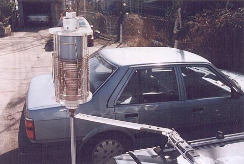

Brackets
This view shows the standoff bracket which is lashed to the luggage carrier bar. The bracket is made from 3/8" x 1" Lexan strip. The original had no brass at the bend and was very sturdy but bending the strip was quite a task. When the first bracket lost a battle with a small tree I decided to make a two part bracket and join them with the brass plates. The plates have 3/8" extension fingers which are bent down (or up) around the Lexan so that they form an interdigitated capture effect. This serves to distribute the stresses on the bracket to the plates, otherwise all the stress would be on the last screw location in the brass plates.
The bracket attaches to the rail using two blocks of Lexan which fit into the rail's slots where the tie down cleats slide. One of these blocks is visible just before the bend in the bracket. The blocks are on both top and bottom to allow for mounting on either side of the vehicle. They are attached with two 6-32 stainless screws and "glued" with methylene chloride, sometimes sold as "Plexiglass cement". The bracket is simply lashed to the rail since the lashing takes virtually no stress. All the torque is applied to the rail through the blocks. This may have been overkill but all things considered I wouldn't change a thing. This is an incredibly resilient mounting. It's withstood 90 mph driving and lots of rough terrain. It provides just enough flex to resist breaking while being rigid enough to prevent any detuning from movement.
The lower mast was 3/4" telescoping aluminum from a Hustler 2 meter base antenna, (pictured here) it has since been replaced with stainless steel tubing with 3/8"-24 matings turned from a K-Monel propeller shaft. I'm sure you could come up with many variations for this but it must be fairly rigid, at least near the top, as the wind load will bend lighter tubing. The 3/4" aluminum was quite strong but didn't stand up to the road salt at all. So I don't recommend aluminum.
Next Page
|
Back to Main Page